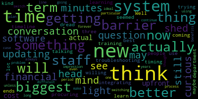

[Bears]: City Council committee to the whole meeting, April 29 2025 is called to order Mr. Clerk, please call the roll Council Callahan. Vice President Collins Councils are also Leming Councilor scarpelli is absent, Council saying, President Bears, present six present one apps and the meeting is called to order, there'll be a meeting of the Medford City Council Committee of the whole at 6pm in the city council chamber second floor Medford City Hall, 85 George B has to drive mid for Massachusetts and via zoom action discussion items 25-039 annual budget process for fiscal year 2026. Preliminary budget meeting. Number one, this will be the first preliminary budget meeting of the FY 26 budget process. Mayor has communicated the following departments will be present Council on aging, finance and procurement. And just for note, the process up to this point, Councilors submitted individual budget recommendations for consideration and many of the whole March 13. We held a meeting of committee of the whole March 18 joint meeting of the city council and school committee March 19 City Council submitted collective budget recommendations to the mayor March 25, and we are holding preliminary budget meetings between now and May 21 with our department heads, and the mayor will submit a comprehensive budget proposal to the city council by Friday May 31 2025 upcoming Preliminary budget meetings and committee of the whole will be Tuesday today, April 29th at 6 p.m. Tomorrow, Wednesday, April 30th, 2025 at 7 p.m. Tuesday, May 6th, 2025 at 6 p.m. Tuesday, May 20th, 2025 at 6 p.m. And Wednesday, May 21st, 2025 at 6 p.m. So with that, it's really up to you guys. I know Bob's here for finance and maybe also an overview. Maybe Nina, you're here for an overview. Pam's here for council on aging, whichever order you'd like to take that in, we'll take you.
[Nina Nazarian]: Thank you very much, President Bears, if it's okay with my colleagues, and I just organizationally think an overview probably to begin is the place to start, and I welcome any comments by Finance Director Dickinson as well. At a very high level, we're still reviewing the budgets that have been submitted by departments, and we presently have a deficit of about a million dollars. We continue to monitor state and federal funds for both revenue and grants that are coming in, or potentially not. That's hopefully not the case, but Obviously, that's a very active situation that's being monitored by every organization probably across the nation who receives any federal funds. We continue to receive proposed increases from external organizations as well. So those are still coming in that formulate our budget as well. And we've seen as the council knows, we've seen significant increases in waste, our waste contract and our waste costs as a community, but also with regard to health insurance, you know, those ones, but as we're reviewing budgets, we're also seeing significant contract increases across these budgets as well. So just a very high level. That's all I have for now.
[Bears]: Great. Director Dickinson.
[Bob Dickinson]: Well, just to affirm what I'm told they're going to get a longer gooseneck for this. Really easier. Yeah, I guess. I don't know. I take up too much space. Um, it's just to affirm what the chief of staff said. Um, you know, we're still reviewing. We've got the for cherries sheets. We've got the House recommendation, but the Senate recommendation has not come through yet. And obviously the finals aren't there. We're reviewing local receipts again. Um, due to how the bills go out. I don't have full numbers on what motor vehicle excise revenue will be this year, which allows us to predict what it will be next year. It just adds to our five-year summary of all that. So that's what I've been reviewing. New growth with the assessor, and there's some fudge in there that we don't actually, you know, we have a number, but it could vary by you know, $150,000 each way. So we're continuing to review all this. And as you'll see from my budget, there's some increases that we can't avoid paying. So we have to, we have to allow for that. So that's where we are on the budget.
[Bears]: All right, Councilor Lazzaro.
[Lazzaro]: Thank you. I appreciate you presenting this. Can you tell me where the million dollar deficit is from just for our understanding?
[Nina Nazarian]: We don't need that additional gooseneck for me and Bob. There's plenty of room for you. Don't worry about that. I really couldn't answer that because we have a number of different budgets we're still going through, and it's not as if we've demarcated somehow where exactly the increase is. For instance, we have a contract in the DPW budget that's going up 66%. It's not like I took that and added it up. It's just a cumulative bottom line, unfortunately. I wouldn't even know how to necessarily go about that, other than looking at each budget and potentially saying what's over, but that still might be under, so there's a netting there, if that makes any sense.
[Lazzaro]: Just for anybody watching or whatever, just a budget the size of a million dollars kind of adds up quickly, and it seems like a significant amount that we are behind, but it's not necessarily because of one crazy line item. It's just many numbers coming together. and forming that deficit number for this year.
[Nina Nazarian]: Yes, President Bears, through you to Councilor Lazzaro, I appreciate that context that you've provided for those listening, and I agree with you. We are talking about a 200 million plus dollar budget. $1 million on a $200 million budget is obviously half a percent. So, you know, I really think it's not as bad as we've seen it in past years, but we also, and as the council knows, are keeping very close to our mind that we have major debt that's going to be added to the FY 27 budget next year and how that's going to affect the overall picture as well.
[Bears]: Thank you. Just really quickly, I think, and I think it's important to clarify. There's a right now with the budgets that you're working with, when you say a deficit, you mean that right now we're projecting that our expenses, if we wanted to spend everything that all the departments want to spend right now, would be a million dollars more than the revenue that we would receive. So we're not in a in a deficit, we are right now trying to figure out how to get expenses down to what we expect revenues to be or revenues up a little bit more before next fiscal year and this is for the budget starting July one and I just think that's just good context for anyone watching maybe for the first time to understand. And we're talking about next year's budget and from some of the documents and some of the conversation you just had. The real big things that are driving costs are the fixed costs that drive the budget up every year. And we're talking about contractual obligations to our employees based on their union contracts, the healthcare through the state group insurance commission, the pension liability that we're funding, and the DPW trash contract. And I think, given just some of the preliminary numbers, we could argue that that million dollars comes from any one of the four budgets this year. I think they're all up about, I think even trash is almost up a million this year. So we, as in past years, are seeing that our fixed costs, the things that we need to pay because we are contractually obligated to provide them just to maintain existing services and the existing staff level are going up faster than our revenues are going up. And that is true even with the override. So we are where we were before. I just wanna ask you one question, then I'll go to Councilor Callahan, which is if we had not passed the override, given where we're at at this point in the budget, what would we be looking at for our schools or for the city without those funds?
[Nina Nazarian]: Thank you, President Bears. First to say, I appreciate the additional context you added as well. I think both your comments and Councilor Lazzaro's comments are right on. As far as what we'd be looking at, I wouldn't be able to provide any type of specific numbers at this stage, but I would say we'd be looking at cuts, significant cuts. if it wasn't for the override. So certainly appreciate the community making that happen because that was that that's significant for the schools, it's significant for the municipal side of the organization as well.
[Bears]: Great, thank you. And I just think that's important grounding context for people are gonna hear Oh, well, we didn't override and we still have a deficit. Well, that's, that's how much things are. That's what the costs are impacting us. Councilor Callahan.
[Callahan]: Thank you. My question is actually also about the prop two and a half overrides. And I just, my understanding is, and I want to make sure this is correct, and for anybody out there listening, that those overrides were passed one, you know, one for the schools, one for the schools plus roads, and at least in that first year that they do have to be spent on the schools. So just to make sure that that million dollars isn't going to come out of the override that we passed, which was designated for the schools, just want to be checking
[Nina Nazarian]: in on that. Yes, 100% confirming that President Bears through you to Councilor Callahan. Thank you. Thank you.
[Bears]: Great. Thank you. All right. Do we have any other questions from members of the council at this time about the budget? Seeing none, I just have one more actual question on a grounding context comment. You were mentioning, you're looking at local receipts and new growth, you're finalizing new growth, and you've looked at the cherry sheets. Is there any hope that some portion of that million may come from maybe some amount of additional revenue as you finalize those numbers versus removing things from the budgets?
[Bob Dickinson]: That would be very nice. There's always hope. I think so, probably. But until we have firmer numbers, we don't know.
[Bears]: Yeah. And I just wanted to clarify, because it sounded like you said it could go either way. And I'm just wondering, is it possible that it sounds like you're basing it like this is the revenue number that we're going to have, and most likely the revenue number is not going to change too significantly either direction?
[Bob Dickinson]: That's correct.
[Bears]: Thank you. All right. If there's no further questions on the general overview of the budget. I think we could go directly to talking about this finance and procurement budget. Oh, I think. Yeah, I think Shane has to turn them on for them to show up here. Great, all right, we'll stick with finance. I'm just gonna read it out really quickly. We have fiscal 26 proposed personnel, 620,295. Fiscal 26 proposed ordinary expenses, 259,840 for a total of 881.35. And that's up from 854,314. So an increase of 25,800 or about 3%. And that is coming from clerical contract raises and a 2% COLA for non-union employees. FY26 audit costs are projected to be increasing by that, by about 10,000. The cost for the admins program increased by 7% expenses. And also there was an advertising increase expense and the lease for the copier and a new printer for checks went up, so. doesn't seem like anything that we don't need.
[Bob Dickinson]: Nothing earth shattering. Again, the major part of the increase is obviously our contractual obligations and what we pay for admins and what we pay for the auditors. We can't really, we tried to talk to the auditors and admins and definitely asked for that. I think Courtney actually got a little bit of a break on the admins program, but those are the costs we're facing, so.
[Bears]: Yeah. And just for anyone watching the audit is the independent audit that we do have all the city finances every year. And admins is the financial program we're currently using for city. Right. Right. Do we have any questions on the finance and procurement budget. Councilor Tseng, Thank you.
[Tseng]: Dickinson for joining us. I know oftentimes when we're here together, we talk about the need, how old our city's financial software is, and especially became an issue when you pointed it out when you came in, that the systems that we were using were not the systems that are commonplace throughout the state or are up to date. And that kind of slows down the workflow, makes things more difficult as well. And so I guess my worry about the issue is more that I think we talk about the issue and then we kind of kick the can down the road about when exactly we might see that transition to a better financial system or a new financial system like a software. And it has these knock-on effects of affecting timeliness of financial reporting, it can affect calculation of retro pay, different payroll and finance updates as well. I guess, is there any money in here, at least any seed money in here, to develop that timeline, that plan for updating our city's financial software?
[Bob Dickinson]: No. Quite frankly, The problem is, right now, admins, though it's slow and clunky and somewhat difficult to use, it's what we've got and what everybody is used to. Transitioning to, there are ways to do that piecemeal, for instance, just updating the general ledger. We're going to have to make some improvements to how we work with the treasury. The treasurer's cash book is on a program called SoftWrite. and we're gonna work on transitioning that to a cloud-based server, because the server for that needs to be replaced within the next year. So I'm looking into doing that, but we're talking to really change to a different software solution is gonna have to go in stages over many years, and it's gonna cost a lot of money. I mean, we're talking north of a million dollars. So I don't, I mean, it's not something that we would discuss on my operating budget, really, that's something that put together a plan for doing and seeing how we can fund it.
[Tseng]: I appreciate that answer. I think that helps explain a lot of it, but I think from this Councilor, what I would like to see going forward is us really think about what that transition looks like, even if it's spread over a period of time, because it would have, I think, long-term positive impacts for our city. And so I think it would go nowhere if we don't at least start to formulate what that plan may look like. That's me speaking for myself.
[Bears]: Thank you for saying when you say a north of a million dollars are we talking one time costs.
[Bob Dickinson]: I'd have to refine the numbers based on what I'm thinking would be the process. Most of it would be one-time costs in terms of actually purchasing the software. And I'm just thinking about the one, the big one out there is Munis, but which I have gotten some quotations for the different modules and how much they would cost. Purchasing the software would be most of that. Then you would need to purchase their yearly support and software usage contract. Same thing that we have here with admins. That's actually more with Munis. It's more costly. And then probably there would be a significant amount of money that we would need to have Munis Personal come in and train everybody to use the new software. And just to give you an idea of the complexity of it, right now, the treasury uses SoftRight. SoftRight will talk to Munis better than it will talk to admins. We would switch to the general ledger module for out of admins into Munis if we chose Munis. After that, we would probably move into switching over the treasury module. Then after that, we'd move into buying the payroll module. And that would get rid of SoftRite altogether and probably get rid of Harper's as the Harper's processes our payrolls. And we could have it all internal in one thing. But again, this is how complex it is. It's hundreds of thousands of dollars. Up front, it's probably like a million dollars. Then it's hundreds of thousands of dollars for the next several years as we gradually transition the entire system over to something like Munis. So it's a big project. It would take a lot of resources. Beyond Munis, we'd probably need an outside consultant to work on the chart of accounts and to make sure all the systems worked correctly and everybody had what they needed. I'm pretty sure at this point, we actually have the infrastructure in this building to run it, which I don't think was the case as little as two or three years ago. Because if we go to Munis, it's all going to be cloud-based. We need fiber optics everywhere to actually run the software. We need enough throughput to do it. So it's a big project.
[Bears]: Well, maybe some good news I'm hearing is we've maybe laid some foundations to enable us to do the project. But it sounds like, to me, acquisition and training are one-time costs in the million to mid-million, $1 million range, maybe more than I'm seeing Nina point higher in the sky.
[Bob Dickinson]: Quite possible.
[Bears]: The low single millions.
[Bob Dickinson]: The low single millions.
[Bears]: And then I guess the only reason I'm doing that is because right now, From what you said, I'm drawn to the idea that we are paying an annual subscription costs for admins, SoftRight and Harper's right now. Yes. And I'm wondering if the combined annual cost of Munis, moving all of them eventually to Munis would eventually even out or maybe be lower.
[Bob Dickinson]: It definitely wouldn't be lower. It's probably about the same, I would guess. Okay.
[Bears]: All right, we'll go to, I think I saw Councilor Callahan and then Councilor Lame, Councilor Callahan.
[Callahan]: How long would it take you to write up a one or two page document that essentially laid out the difference between keeping the software we have and moving to the new software, both in terms of like upfront costs, long term costs, like at what point we would sort of break even or begin to be saving money if we move to the new software, how much work it would be? Do you think that you could put that into a one or two page document and would it be terribly burdensome for you?
[Bob Dickinson]: I don't think so. I haven't really gotten into the gory details of it yet, but I don't think it would be that difficult to just outline how I see it working.
[Callahan]: I just wonder if, because, you know, I hear all these names of different software is going around and then all this different amounts of money and, and I, I have trouble wrapping my head around it if it's not like written down. So I would really appreciate that I don't know if that's something that you know that Council feels is worth, worth the time of the staff time to like put together like a one page doc just of the basic outlines, but I would appreciate that.
[Bears]: I would consider that a motion by Councilor Callahan to request that the finance director put together a one page document outlining the process to move to.
[Callahan]: I am happy to make that motion unless anybody has in particular, before I begin making a motion. Is there anybody who's like, no, don't do it, because I'm happy to make that motion.
[Bears]: There's a second on the motion. We'll go to Council Chief Steph.
[Nina Nazarian]: I'm not a no for the record. But I do want to share some of the considerations that Bob is confronted with at this point, because I think it should be stated here tonight, and you may know we have a vacancy in our budget manager, assistant finance director position. We're presently trying to onboard that position. well, hire for that position and then onboard that position. And there's a number of deadlines and expectations between now and June 30th, right? So I'm just saying all that to kind of lay out what the resource constraints might be on the immediate horizon. And then I know Bob goes into his busy season. So I'm trying to tee that up for Bob in case he has any other additional questions.
[Callahan]: perhaps I put a due date of July 31st to make it so it's not like during budget season. If you can finish budget season and then you know. It's always budget season in the fall. I know, I know. I don't know if that's helpful.
[Bob Dickinson]: I'm busy all the time. Sometime this summer I could probably put that together. The other consideration is that you know when we talk about this everybody's heard of Munis, well not everybody's here. Very few people have probably heard of Munis, but people who do my job have all heard of Munis. There are other software solutions out there for this. Whether or not that's another piece of this whole puzzle is we wouldn't just call up Tyler Technologies and say, hey, install Munis here. Here's a million dollars. We need to We need to investigate the other solutions and obviously have procurement take a look at it, just because we have to do our due diligence. If we're looking at putting together sort of an outline of what it would take, if you're not too concerned about the real gory details of how these systems work, that wouldn't take much time. And I can put it in my calendar to do Once we get the budget all passed, I've got my newest, hopefully, new assistant finance director working.
[Callahan]: Great. In which case, I would love to make a kind of simple motion. I'm not going to put a ton of details in because I think you understand what we're looking for. And the motion is that we request a document outlining what it would take for Medford to update our financial software.
[Bears]: Okay. And could we maybe request that by September... First? First of the day? Was it the day I was going to say? I was going to say September 30th.
[Callahan]: That's fine as well. Perfect. By September, it doesn't matter. I think it's fine as long as it's this year.
[Bears]: All right. Is there a second on that motion? Council Lazzaro? All those in favor?
[Callahan]: Aye.
[Bears]: Opposed? Motion passes. Any further questions, Councilor Kellogg? All right, we'll go to Councilor Leming.
[Leming]: So I had this question on my mind for a few minutes now, but conversation may have shed some light on that. But still, I'm curious. In your head, what do you see as the biggest barrier to actually updating the financial software? The upfront cost, the actual troubleshooting with procuring and integrating the new system, or is it training staff to use something new? Because it seemed like those are the three things that you were talking about just now. Like, which of those do you kind of dread when you think about doing this?
[Bob Dickinson]: Number three, the training. Obviously, the upfront cost is a big number. How we get there, I don't personally know. There's many different things in this city that need a million dollars, quite frankly. Once that's done, then once you have the money together, then actually installing the software and doing that is done by, you know, it's done by professionals and consultants. That's not a big deal. Making, you know, making sure it is a big deal, but it's something that wouldn't affect the day to day operations of the city. they would install the software, they would make sure it actually does what it's supposed to do, they would make sure that it actually, that it can connect to SoftWrite correctly, so that we can get that aspect of it working. And down the road, you know, if we move out of Harper's and move into the payroll module. There's a whole, there's a bunch of different modules that Muniz has. We would probably start with the general ledger and the AP module. So, which is what admins does right now. And then we gradually moved into the treasury module. There's a contract module, which makes procurement and that workflow much, much easier. Then you have for the Treasury module that would include include, you know, real estate, personal property, boat excise tax, motor vehicle excise tax, that would have to connect to Kelly and Ryan, for instance, who, you know, goes after people who haven't paid their motor vehicle tax in a while. But that's all done by people who you know, they're trained, that's what they do. It's complicated, but we would be testing those systems and making sure they work. That wouldn't affect the day-to-day operations of the city. But once you get that and you make the switch over to a new software system, it's like, you know, you've been using Microsoft Excel all your life, and now you have to use some, you know, Google Docs. It's like you're not used to using this other system. A lot of it works in similar ways, but not all of it. So training everybody in the city who would need to make the transition, given that many people have been here for years and years and years using admins. They're used to what they do. That would be. long and complicated.
[Leming]: So in terms of timing of this, do you think that a better timeline would be maybe when there ends up being a lot of new people coming into your department who are more willing to learn new systems? Because I'm just trying to think when would the best time for this be if the biggest barrier is staff learning to do something new.
[Bob Dickinson]: I'm trying not to get weedy on this, but the point is that admins is used across the city. Every department uses it in some way. And to get the benefit of having a new integrated system means that people have to get used to how that would work. I'm familiar with Munis because I used it in my prior position. One of the advantages of it is, for instance, accounts payable workflow. Somebody puts in a requisition that automatically goes to their department head. Department head approves it, and it goes to finance to make sure that there's enough money there to pay for that. It goes to procurement if it's over a certain level. This is all by email. But these are all, you know, there's the end user, then there's the department head, then there's finance, then there's procurement. And it goes to be made into a PO, so that's procurement again. And this is all done through workflow, it's all done through email. You just get an email, you click on it, you go, okay, this is... this is what they're looking for, and you sign off on it. But the bottom line is that everyone from the clerk in one department, through the department head, through all the other people who would have to sign off on that, they all have to learn how to do it with the system. So it affects, it's not just that if finance had a bunch of, I mean, I'm sure the people in finance who use admins all the time, I have no doubt that I can train them to use Munis fairly quickly. But across all the departments in the school, all the departments in the city, there's a lot of people. There's a lot of people involved who are suddenly gonna have to use a new system when we bite the bullet. And that could go really well. It could take a lot of training.
[Leming]: Well, I think where I'm getting at is that I'm not getting the impression that there will ever be a particular period in time where that will not be a problem. So unless we plan to continue using the same system forever, if there were a case that doing it 10 years down the line would be an ideal time, would be a better time to actually make this switch, and that's one thing. But if you don't think that, but if switching over is always going to be a difficult process, even though we'll have long-term benefits,
[Bears]: That's all. I don't want to belabor this too much. I do a, you know, one 100th the size version of what you do in my day job. But essentially, what you're saying is we'd be this process is at the end of it, we would have had to reteach everyone who buys anything in the city how to buy something. make sure all the payroll stuff moves over smoothly and everyone who was paid by the city continues to be paid correctly, and also reteach not just people who work in the building, but also introduce residents to new ways to pay most of their taxes or fees to the city through the Treasury Department.
[Bob Dickinson]: I hadn't even gotten to the actual online payments and stuff. Those systems would integrate with Munis. I know that I was involved in doing some of that for Nantucket. I know it can do it. Setting it up is yet another aspect of this.
[Bears]: Yeah. OK. And I just put that out there. I agree with, I think, the spirit of the council, which is to say, there's no better time than soon to get started on this. But also, I mean, essentially, we'd be talking for at least some period of time, we'd be paying for the new system, continuing to pay for the old system, probably running both systems in parallel, until we're sure that the new system is not going to fail out for an essential, you know, obviously, you can't miss a payroll run, right? So I understand the scope and scale of what you're talking about, but I think this document is a good start. I really think soon after that, we should get into the nitty gritty of what does it look like in the CIP to pay for the one-time costs here? How significantly, obviously, depending on bidding and what solution ends up being selected, are we talking about a huge, know, $250,000, $500,000, $750,000 impact on the operating budget? Are we talking about like, 50 or 100,000? Because I do think that when we're talking about constantly being in a million dollar shortfall, when we're trying to make the budget every year, that would be impactful to me, you know, if we're talking about another million versus 100,000, that order of power, but just appreciate you going through it. The only other thing I wanted to ask, you went through how an AP workflow would work with a new system. What does it look like now?
[Bob Dickinson]: It's mostly paper.
[Bears]: OK. And I think that's just the kind of hidden cost element of this, I think, is something that it might be worth noting or trying to note in the document you come up with over the next few months. Because that's the one piece of this where I think there may be huge benefits in the sense that if we can get a system that's much more efficient, how many hours of work are we saving people in your office, but also all the people putting in POs and everyone working in treasury that could go to do something else? Because it's not, you're not seeing it on the line item, but if a clerk is spending 10 hours a week or 15 hours a week in a department doing mostly this, and under a new system, it'd be two to five hours a week. That's pretty significant financial impact on the city in the long run as well. So I know that's hard to quantify, and I'm not asking you to quantify it, but I just think it's a part of the conversation. The goal of this is not just maybe making it easier to put the city's financial, put the Munis module to show it on the website, it's also trying to make it so that the people in that building can focus more time on other work rather than having to move paper back and forth to buy paper, for example. So if you want to comment on any of that, I don't want to not let you.
[Bob Dickinson]: Yes, but it does give you an impression of how complicated it is to get all of this changed. Yeah. And we didn't even touch on payroll when payroll would be completely electronic. So departments would be entering payroll into Munis every week, and then that would flow straight into Treasury and straight into a file that goes off to the bank for electronic transactions. It's again, that's you know, that would be in phase two or phase three of this project But you can imagine how complicated it would be to train everybody on how that actually works. Yeah while making sure Everybody once a week gets their check.
[Bears]: Yeah, so on the back end you're saving dozens and hundreds of hours But it's a huge amount of fun to get there.
[Bob Dickinson]: Yeah, there's a lot of upfront cost to this.
[Bears]: Yeah, I I appreciate the discussion, appreciate you writing something up. And last thing, you know, I think, I still think this is important. I still think it's an issue. You know, when you first came on and a couple of years ago, when I would say there was less familiarity with the complexity of the systems that we have, you know, I hope you're here through however long you want to stay here and through us transitioning to new modules and a new financial system. how are we doing on the, you know, what for lack of an artful term, I often in operations and finance work called the bus factor, which is if suddenly we did not have Bob Dickinson here, how are we able to transfer the knowledge that you have or the ability of someone to come in and say, I understand enough how these systems work that we can do a budget, do an audit, nevermind just running payroll and AP and stuff like that.
[Bob Dickinson]: mean with our existing system?
[Bears]: Yeah just if you know if let's assume you you move on or you retire or whatever.
[Bob Dickinson]: I get hit by a bus.
[Bears]: You hit the lottery let's let's make it positive we'll call it the lottery factor you know.
[Bob Dickinson]: Okay.
[Bears]: You hit the mega millions.
[Bob Dickinson]: Kidnapped by aliens.
[Bears]: Kidnapped by aliens you know we could go any direction but you know and someone needs to come in and keep running the city. I know that was a tough that there was a lot of training that had to go into getting to understand how our old systems work and integrate so
[Bob Dickinson]: Right now, seeing as I don't have an assistance finance director, which is why we're working hard to get a new person in there and get them trained, it would be, I'll try not to get kidnapped by aliens in the next few weeks. But it's not, there's an awful lot of, there's an awful lot of stuff to know about it, but it's not like the city couldn't run without me. It's just keeping up with everything and having the knowledge to know how things should be set up in terms of setting up the chart of accounts, setting up treasury codes, making sure that all these things actually flow correctly. making the journal entries for the audits. And that's something that anybody, you know, when you went out to replace me, that person would have to know that kind of stuff. Just that's in the nature of this position. And then obviously, as happened when I was, during the interim before I was hired, you know, there's consulting firms that, you know, specifically have people who can step in and do this stuff. Yeah, it would take a while to get up to speed in how admins works and software it works and what what it would take to move it to Munis. Sure, or another software program.
[Bears]: Yeah. And I appreciate that. And, and, you know, I say it to kind of go towards counseling points, but also to note like, There's people who have been using these systems a long time. There are quirks in these systems. There are probably... little things that, you know, someone learned and now they know, you know, it makes things much faster, I would guess. Or, you know, when they're looking something up, they have that institutional knowledge and experience. That means that even though the system is clunky and complicated, once they learn, oh, soft write, if I click this button to connect it with admins this way, it's much easier than trying to look at Google it or whatever, you know. And I think, you know, again, it's more work for an office it's overworked and you are the first department we're hearing from and I'm guessing that every department we hear from will be talking about under resourcing and being overworked. But I think one of the reasons we, at least for me being on the council in the fiscal 23 budget process and, and, you know, what happened there, and that interim period between the CFO positions. One of the reasons I think, and Councilor Tseng being here too, and Councilor Collins, and I'm sure Councilor Scarpelli would say it as well, one of the reasons I think we're so intent and focused on this idea of moving to a new system is we saw what happened when the existing system didn't have the people with that institutional knowledge and they were learning that institutional knowledge on the job, trying to put together the budget. It was not certainly the process we have now, which I think is really great. And I'm saying this mostly to be positive and say, you know, happy with how things are working and impressed at like, it's, it's never, there was a double entry or anything. It's like the system works, you get us the information, even though it's not the best system. something if we're gonna be talking about like a three, five, six year timeline or more for transitioning to a new system that a Bob and Courtney's thoughts or a Bob Courtney and Judy's and Lisa's thoughts book of here's the workarounds that we found might be like something like an SOP around some of those kind of the quirkiness of our existing system might be worth having on hand just for the possibility of, you know, I'm just thinking back to that specific case that we experienced together.
[Bob Dickinson]: Yeah, it, it has, it has occurred to me and there are definitely documents in place for some of that. It hasn't, it's not formal. Yeah.
[Bears]: You know, yeah, no and I appreciate that and I think you know even just collating those and saying, in case of a fire, break this glass, here's where the book is. It could go, it would, you know, I never want to be in that budget again. This is, you know, it's not great, but it's way better. All right, any further questions for finance and procurement? Seeing none, we will go to Council on Aging. Thank you. Thanks, Pam, for sitting through and me kind of trying to end the council talking about financial and procurement systems. I'll just read really quickly. We have fiscal 26 proposed personnel budget $264,064 and ordinary expenses $16,000. And this is an increase of about $3,000 or 1% from $277,157 to $280,064. And it looks like all the increases are in the salary and one office equipment. So about $5,400 in COLAs, $20 increase in an office equipment contract. And it looks like there was a reduction in some of the proposed budget for telephone and internet in the ordinary expenses. With that, I'll go to you, Director Pam Kelly, Council on Aging.
[Pam Kelly]: Thank you, Councilors. Thank you for having us tonight. As Councilor Bears just mentioned, yes, there is a slight increase in the payroll portion of the four staff members that are on the payroll for the municipality, and that is due to the I'm sorry, the non-COLA staff, and then obviously one union member staff increase. The decrease in the telephone internet was due to the purchase for the citywide upgrade for the phones, and all of the bills were contracted under one new department, the IT department I believe carries that now. So it's not that we don't have phones. We do have the phones but we don't have to worry about the billing anymore. Are there any questions?
[Bears]: Feel free to add anything you want and then we'll go to questions.
[Pam Kelly]: Okay. Our budget is really simple. There's not too much included in that for the Council on Aging. And I think that's pretty much self-explanatory for what we have. But if there's any questions for me, please.
[Bears]: Do we have any questions for Pam, Council on Aging? Councilor Lazzaro.
[Lazzaro]: I don't have any questions. I just appreciate you being here. And this is pretty much flat funded as far as I'm concerned. So I wish we had more with the we could give you and improve your offerings. But I mean, you do a lot with what you have right now. I know. And I know you're you're really like overachieving with what you're given even now would be great for you to have more, hopefully someday soon. But I appreciate your presentation.
[Bears]: Thank you, thank you very much. I just have a comment and a question. I just want to say thank you for working with members of the council, you know, the whole team over there, Suzanne and everyone else for setting up the listening sessions. I know that several Councilors have been engaging more with the senior center in an official formal capacity, not just coming to events, but having those listening sessions. So I really want to thank you for that.
[Pam Kelly]: And we really appreciate it because it's not easy for many of our participants to get here to City Hall. So to have all of you come down once a month at different times, it's helpful, and they appreciate it.
[Bears]: Awesome. Thank you. And then my just my other question, I know, the general fund budget, you know, this budget pays for people, and the office supplies, basically, correct, but you get some other funds, could you tell us, you know, state and other grant funds than what that programming looks like?
[Pam Kelly]: Absolutely. So we just recently had the CDBG budget. Right now, it hasn't been confirmed yet, but I will be getting hopefully $24,000, which helps for four different areas of extra programming and resources that we use. The other budget that we get is from the state. The state actually, for the entire senior center communities, there's 350. You are based on your population. seniors that are age 60 years of age and older. So based on the 2020 federal census, the Medford has 12,766 seniors age 60 and older. And we are guaranteed a per adult yearly rate. So at this time, it's $15 per adult, and that fund is what we actually use for all of the exercise classes, all of the extras that are not covered in the municipal budget. So our driver for our van, some of our events, Mystic Valley Elder Services, Title III match, some of the things that might fall in between the gap that doesn't get completely covered by the municipal budget.
[Bears]: Great, thank you. And yeah, I just think the other great thing about this process, and there's so much context, this is the city budget.
[Callahan]: Correct.
[Bears]: But the city budget isn't actually all the money that city departments spend on the things that they do. And so, for example, you know, it's almost you know, another hundred something, almost $200,000. Correct. Yeah. That you use for all the other programs that absolutely our seniors love. So I just think, you know, as much as we can talk about reminding everyone, you know, this, you might see this piece of paper and say, well, what are we doing? The answer is it's coming from somewhere else.
[Pam Kelly]: Correct. Other areas. And we also do a lot of grant writing.
[Bears]: Yep.
[Pam Kelly]: That's very helpful.
[Bears]: Awesome. Well, thank you so much. I'm seeing no further questions. Do you have any motions? All right, thank you, Director Kelly.
[Pam Kelly]: Thank you.
[Bears]: That was our two departments and our overview for today for the Committee of the Whole meeting. Do we have any further discussion or is there a motion? On the motion to keep the paperwork in committee, refer out the motions and questions, and adjourn. I don't think we had any. We had the motion from Councilor. That's from Councilor Tseng, seconded by. Seconded by Councilor Leming. All those in favour? Opposed? Motion passes. Meeting is adjourned. We'll be in regular meeting in just a minute for seven, a little after seven o'clock. Thanks.
|
total time: 19.98 minutes total words: 3274 |
total time: 1.11 minutes total words: 161 |
total time: 2.29 minutes total words: 442 |
total time: 1.77 minutes total words: 262 |
|
total time: 1.78 minutes total words: 258  |
|||
{kind=link}
{kind=link}
{kind=link}
{kind=link}
{kind=link}